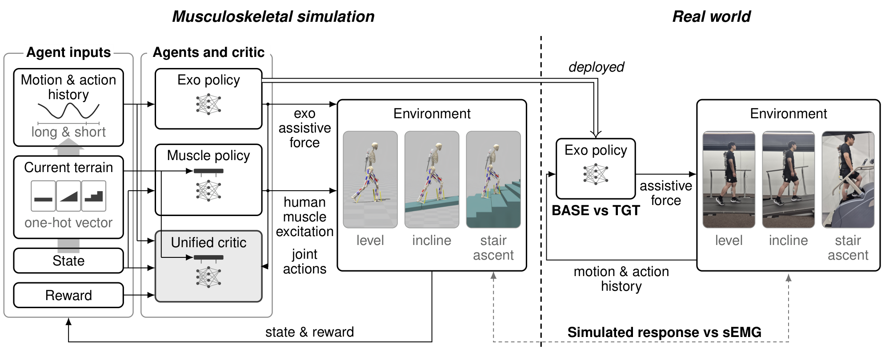
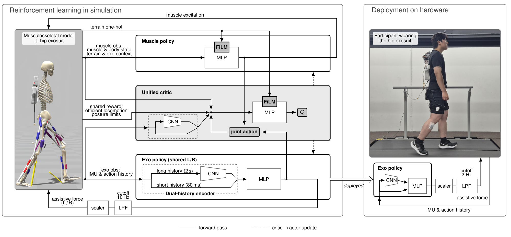
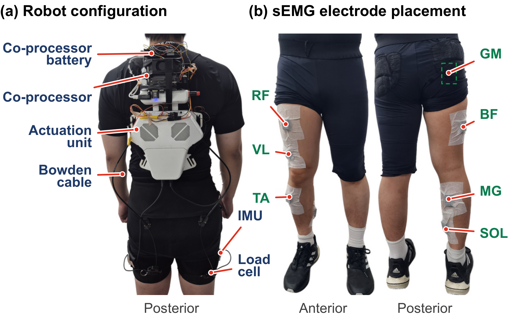
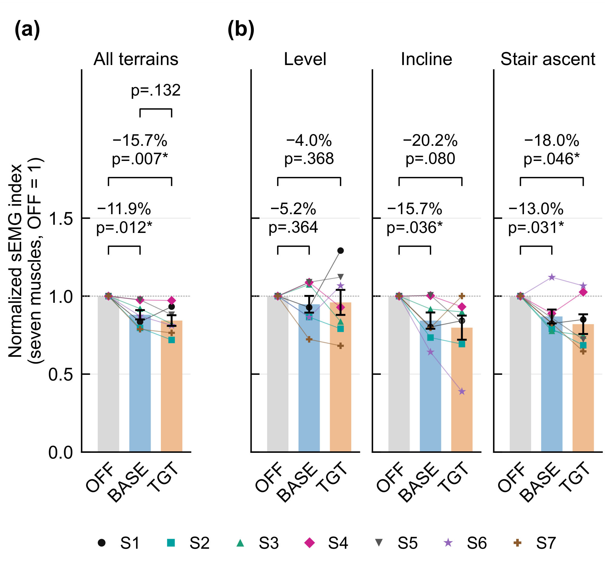
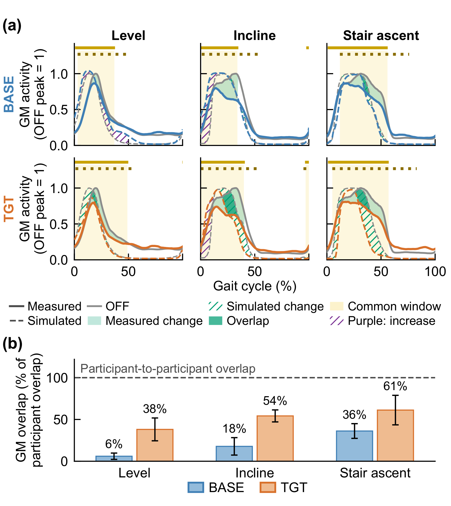
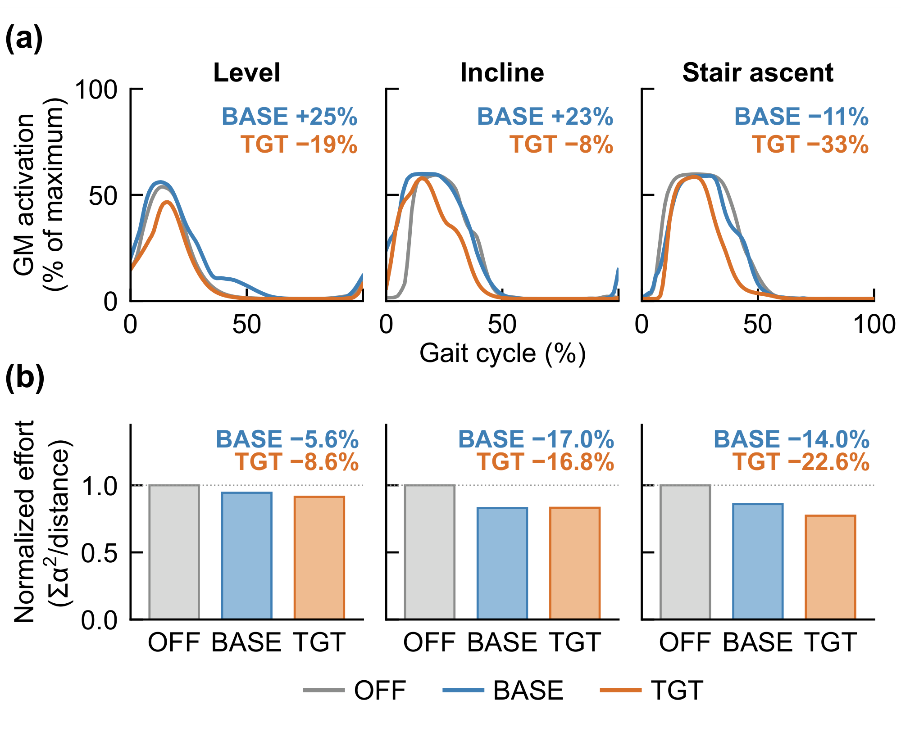
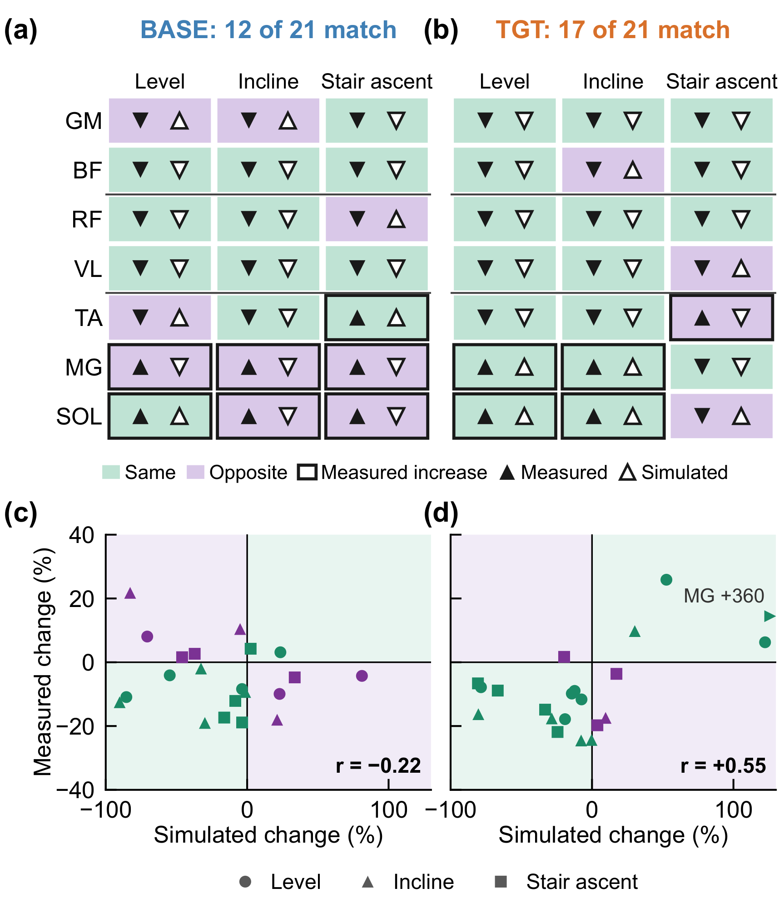
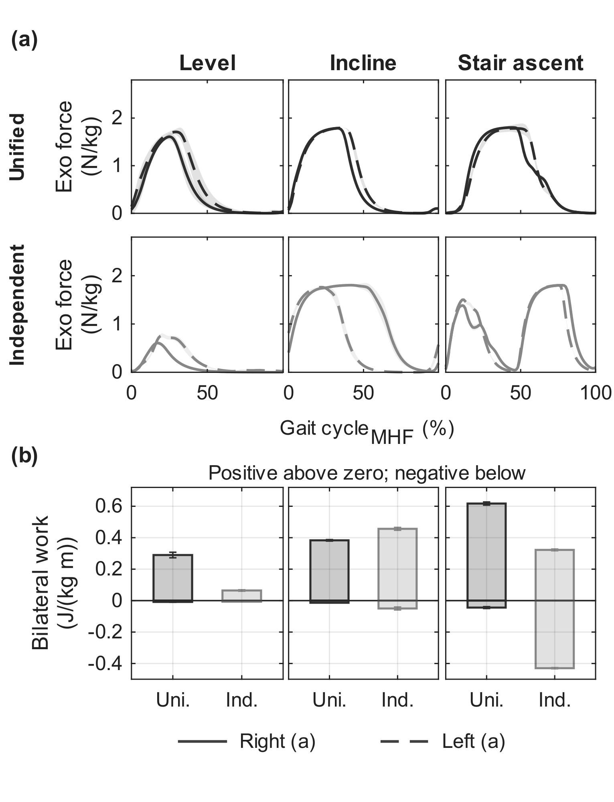

Shared muscle objective
BASE includes aggregate muscle-effort reduction. TGT adds an assisted-muscle unloading term to the shared reward used by the human and exosuit policies.
SUBMITTED MANUSCRIPT
Chung-Ang University · HUROTICS
Submitted to IEEE Transactions on Neural Systems and Rehabilitation Engineering (TNSRE), 2026.
This journal manuscript extends Dongmin Go's master's thesis, Synergistic Myomimetic Control of Exosuit via Unified-Critic Reinforcement Learning (Chung-Ang University, 2025).
This study tests whether modeling a wearer’s goal of unloading the assisted muscles as a shared human–exosuit reward brings simulated muscle responses closer to measured responses. Human and exosuit policies learn together under a unified critic, and the exosuit policy is deployed without further learning for comparison with surface EMG from seven participants.
The framework covers level walking, incline walking, and stair ascent without reference-motion tracking. On hardware, the controller uses IMU and past-action histories, without requiring terrain labels or muscle-state measurements.

Select any figure to view it at full resolution.
BASE includes aggregate muscle-effort reduction. TGT adds an assisted-muscle unloading term to the shared reward used by the human and exosuit policies.
Policy inference at a nominal 50 Hz on a Jetson Orin Nano. Force commands travel over CAN to the robot's 1 kHz low-level controller.
Two reward variants, BASE and TGT, are compared with motor-off assistance in seven healthy participants across three environments.
The muscle and exosuit policies share a unified critic during training. The exosuit policy combines long and short histories of IMU observations and past actions, and the same policy is shared between the left and right sides.

The wearable system combines an onboard inference computer, inertial sensors, and force sensing. EMG electrodes record activity from seven lower-limb muscles during the hardware evaluation.

1 min 49 sec · Device configuration, policy inputs, the training and deployment framework, and a deployed test session. The video includes on-screen explanatory text.
Selected results from the manuscript submitted to TNSRE.
After signal-quality screening, the aggregate sEMG index across seven participants and three environments decreased by 11.9% with BASE and 15.7% with TGT relative to motor-off.
Both policies reduced the aggregate sEMG index relative to motor-off. The BASE–TGT difference in this measure was not statistically significant. The index is derived from muscle activity; metabolic energy expenditure was not measured.


Simulated and measured changes agreed in direction for 12/21 muscle–terrain combinations with BASE and 17/21 with TGT. Correlations between simulated and measured changes were −0.22 and 0.55, respectively.
The between-policy difference in sign agreement was not statistically significant (p = .23).


Under the same BASE reward and a common 2 Hz force-command filter, the two critic configurations produced different force and work patterns. Positive work exceeded negative-work magnitude with the unified policy on all three terrains.
Each configuration was trained once, and muscle-effort changes did not favor one configuration across all terrains; this comparison does not establish that one critic provides greater assistance.
